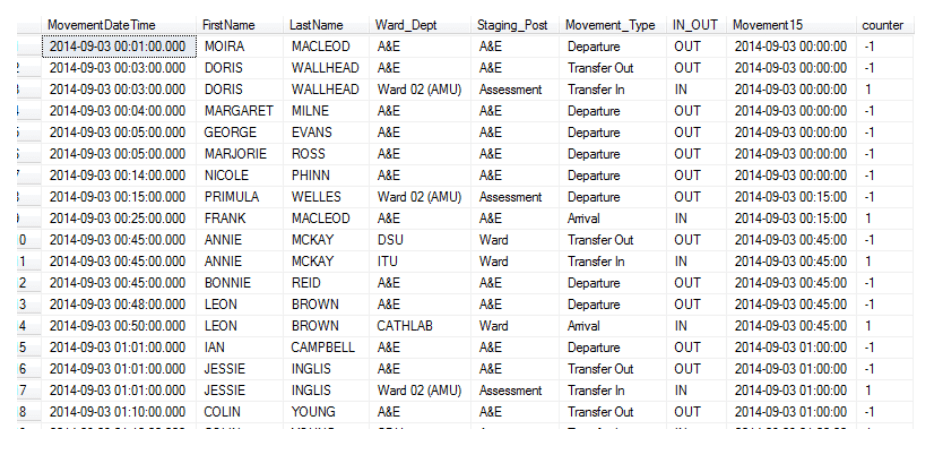
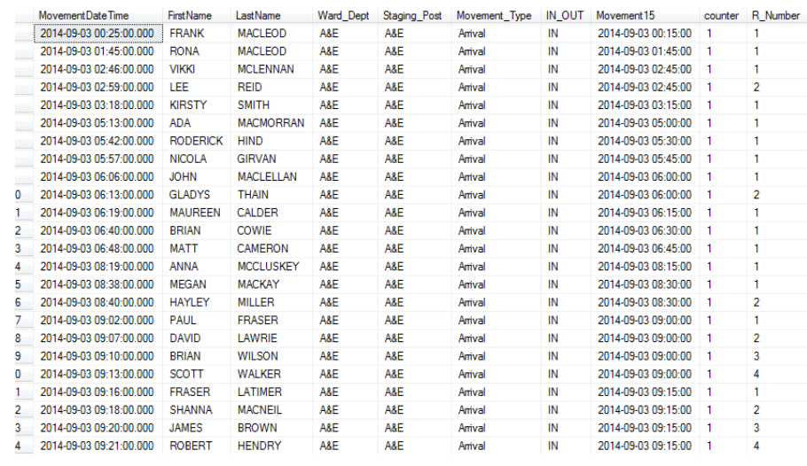
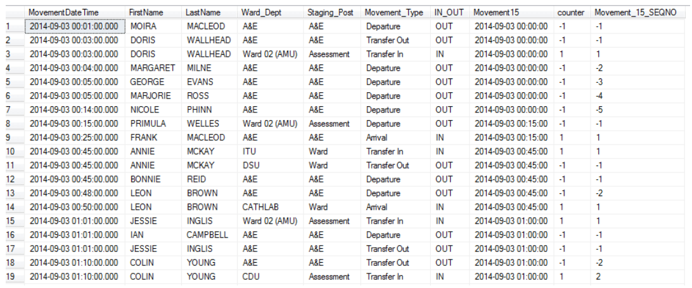
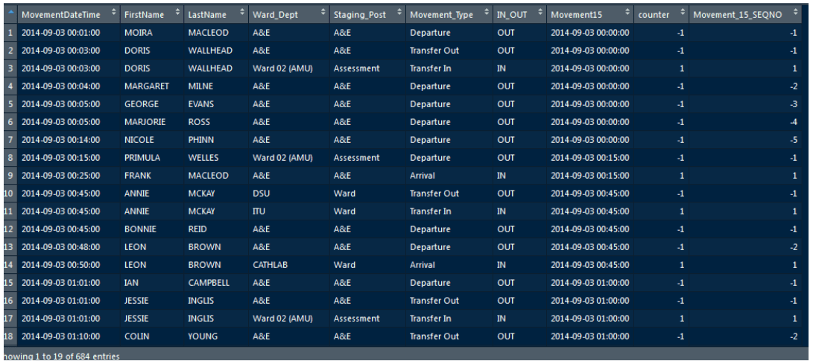

SELECT [MovementDateTime],
[FirstName],
[LastName],
[Ward_Dept],
[Staging_Post],
[Movement_Type],
[IN_OUT],
cast(round(floor(cast([MovementDateTime] AS float(53))*24*4)/(24*4),5) AS smalldatetime) AS Movement15,
(CASE WHEN IN_OUT = 'IN' THEN 1 ELSE -1 END) AS [counter]
FROM [DB].[dbo].[TABLENAME]
GOComparing {dplyr} with SQL nested queries
Following on from my last post, where I demonstrated R to some first time R users, I want to do a wee comparison of {dplyr} V SQL, so that folks, particularly those in the NHS who might be R curious, can see just what the fuss is about.
To do so I want to recap on the example I showed at the AphA Scotland event.
This,in turn goes back to some work I’ve been doing with Neil Pettinger, where we are looking at ways to visualise patient flow.
This relies on a spreadsheet that Neil originally put together. Part of my demo was to explain how to recreate the visualisation in R, but I also showed some of the data transformation steps carried out using {dplyr} and some fellow {tidyverse} helpers.
In this post I want to focus on that a but further, by showing the SQL code I would write to arrive at the same end result.
In order to do this I imported Neil’s spreadsheet (which I’ve uploaded - with Neil’s permission to the repo RowOfDots) to into a SQL Server table (by using the built in import wizard, for a quick but not reproducible way of ingesting the data).
Here’s how that looks:

NB - ALL patient names are entirely made up.
As a reminder, for this task we need to create a column that mimics Excel’s floor function and reduces the MovementDateTime field to the nearest 15 mins. We also want to get a count of how many patient were either moving IN or OUT during each 15 minute segment of the day.
You’d need to replace the database and table names to suit. I’m not going to explain the code for flooring the datetime field - just know that it works, but you may want to compare the syntax for the case when statement with the equivalent {dplyr} code (see later).
Here is the table output - with the 2 new columns at the end:

Now things get more complicated.
I have a counter field, but I want to get a cumulative count by each 15 minute segment, staging post and whether this was a movement in or out.
One way to do this is to wrap the original query inside another query, so that our newly created counter column can be utilised. This is a similar idea to the the method of mutating a column in {dplyr}, and having it available within the next pipe.
We have to make use of SQL’s windowing functionality to create virtual groupings and orders within the data ( SQL is a set based language, and there is no concept of row order within a set. Therefore to get a cumulative count, we need to make SQL think in terms of rows by partitioning the data by the desired grouping columns and providing columns to order by):
SELECT x.[MovementDateTime],
x.[FirstName],
x.[LastName],
x.[Ward_Dept],
x.[Staging_Post],
x.[Movement_Type],
x.[IN_OUT],
x.[Movement15],
x.[counter],
ROW_NUMBER() OVER (PARTITION BY IN_OUT, Movement_Type,Staging_Post,Movement15 ORDER BY (MovementDateTime))AS R_Number
FROM
(SELECT [MovementDateTime],
[FirstName],
[LastName],
[Ward_Dept],
[Staging_Post],
[Movement_Type],
[IN_OUT],
cast(round(floor(cast([MovementDateTime] AS float(53))*24*4)/(24*4),5) AS smalldatetime) AS Movement15,
(CASE WHEN IN_OUT = 'IN' THEN 1 ELSE -1 END) AS [counter]
FROM [DB].[dbo].[TABLENAME])x
Understanding windowing techniques is a great SQL skill to have. Don't forget where you first saw this ;)!Understanding windowing techniques is a great SQL skill to have. Don’t forget where you first saw this ;)!
A couple of things to note here are that when we wrap or “nest” the original query, I gave it the alias ‘x’. You do need to provide an alias for this inner query, or the outer query won’t work. Although not strictly necessary, I also prefixed the column names in the outer query so it’s clear that I am selecting the columns from the “virtual” table defined by the inner query.
Here’s the output with our new Row number (or RNumber) field.

Almost done, but this is still not in the right format - I need to get an accurate cumulative count. Once more, I take the previous query, and nest that inside a new query - so you can see this is similar to lots of base R style manipulation where the code starts from the middle, or an end, and works back.
SELECT y.MovementDateTime,
y.FirstName,
y.LastName,
y.Ward_Dept,
y.Staging_Post,
y.Movement_Type,
y.IN_OUT,
y.Movement15,
y.[counter],
y.[counter] * y.R_Number AS Movement_15_SEQNO
FROM (
SELECT x.MovementDateTime,
x.FirstName,
x.LastName,
x.Ward_Dept,
x.Staging_Post,
x.Movement_Type,
x.IN_OUT,
x.Movement15,
x.[counter],
ROW_NUMBER() OVER (PARTITION BY IN_OUT, Movement_Type,Staging_Post,Movement15 ORDER BY (MovementDateTime))AS R_Number
FROM
(SELECT [MovementDateTime],
[FirstName],
[LastName],
[Ward_Dept],
[Staging_Post],
[Movement_Type],
[IN_OUT],
cast(round(floor(cast([MovementDateTime] AS float(53))*24*4)/(24*4),5) AS smalldatetime) AS Movement15,
(CASE WHEN IN_OUT = 'IN' THEN 1 ELSE -1 END) AS [counter]
FROM [DB].[dbo].[TABLENAME])x) y
ORDER BY MovementDateTime
GOTo recap - our first query floored the movement time to 15 minute intervals and gave us a counter field, we then used that counter field to generate a row number field. Now, even if I’d ordered the result of the second query by MovementDateTime, it still wouldn’t suffice because the rownumbers are all positive, and I want them to be negative when the movement was a movement OUT.
We can’t manipulate the row number field within the same query that it is created, so we nest the whole lot once more, this time arranging in the correct time order and multiplying the counter field by our row number field.
You’ll notice the second query has been aliased (with a ‘y’) and the columns prefixed so that is is clear exactly where the query is obtaining the data from.
This gives us our final output:

A reminder of the {dplyr} code I used:
library(tidyverse)
plot_data <- data %>%
mutate(Movement15 = lubridate::floor_date(MovementDateTime,"15 minutes")) %>%
group_by(IN_OUT, Movement_Type,Staging_Post,Movement15) %>%
mutate(counter = case_when(
IN_OUT == 'IN' ~ 1,
IN_OUT == 'OUT' ~ -1)) %>%
mutate(Movement_15_SEQNO = cumsum(counter)) %>%
ungroup()And here is the output - compare with above:

A lot more elegant? Definitely.
Another approach to writing the code in SQL would be to use a Common Table Expression, which is a more straightforward of writing and reading it. It’s a similar idea in that you create virtual tables with queries that then run top to bottom until you get your final output. However that is a post for another day :)
What I hope you get from this post is that {dplyr} and other packages ({lubridate} for example) really do make life easier for data manipulation.
Look at the SQL for flooring the date, compared to the {{lubridate}} call. Look at the elegance of mutating new columns and having them available within the next chain, compared to horrendous multi-layered nested queries (this one was pretty tame - imagine a few more levels on top of that). You can see how traditional SQL can get unwieldy.
{dplyr} is a fantastic asset to the R community, and I hope it might prove to be a great hook to get R further established within the analytical departments of the NHS.
This blog was written by John MacKintosh, NHS data analyst based in Inverness, Scotland, and was originally posted on his blog site johnmackintosh.net.
This blog has been edited for NHS-R Style.